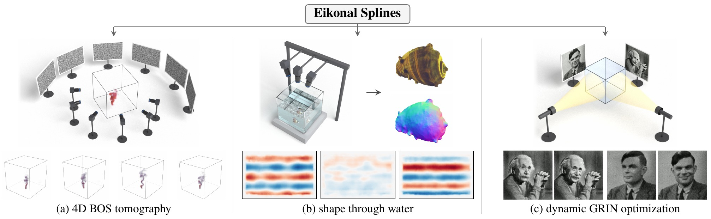
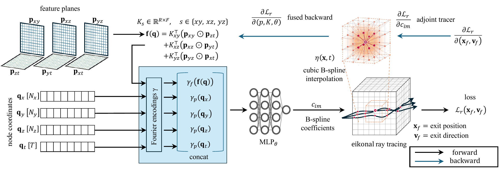
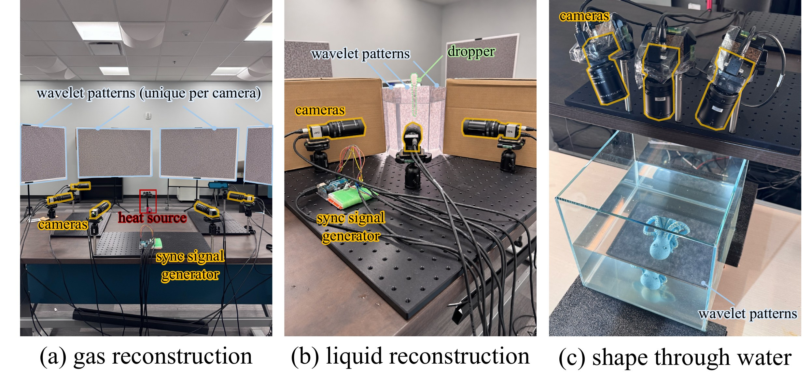

Abstract
Inverse rendering in time-varying refractive media requires repeatedly tracing and differentiating curved light paths through a field that is itself unknown. Neural fields provide useful priors for inverse rendering but are costly to evaluate and differentiate for a large number of rays, while directly optimized trilinear grids have gradients that jump between cells and overfit when views are few. We present Eikonal Splines, a differentiable inverse rendering framework combining neural priors with efficient, physically based curved-ray light transport. Our key insight is to leverage a spatiotemporal feature-plane neural network to generate a smooth cubic B-spline field, which allows efficient querying of the refractive index and its gradient in forward ray tracing while utilizing the spline's differentiability for efficient adjoint optimization in backward ray tracing. Our framework matches or improves the reconstruction accuracy and unseen-view generalization of both grid-based and neural baselines, and trains faster than the neural ones. We demonstrate its versatility on simulated and real data through background-oriented schlieren tomography in air and water, dynamic gradient-index optimization, and joint reconstruction of water surfaces and of objects under moving water.
Method


Schlieren tomography
Background-oriented schlieren tomography recovers a refractive-index field from the way it displaces a background pattern seen by a few cameras. We compare with the trilinear grid of Teh et al. extended to one grid per frame (Teh et al. + time), with He et al., and with Lu et al.
Heated air
Hot water
Shape through moving water
Three color cameras look down through moving water at an object on the glass floor of a tank, above a displayed wavelet pattern. We recover the water surface in every frame and the object beneath it.
Dynamic gradient-index optics
Two simulated cases of strong refraction: recovering a theoretical time-varying Luneburg lens, and shaping a gradient-index volume that projects two videos.
Growing Luneburg lens
Two-view caustic display
Interpolation
The same generator read out with trilinear, quadratic B-spline and cubic B-spline interpolation, on the heated-air capture.
BibTeX
@misc{vengurlekar2026eikonalsplines,
title = {Eikonal Splines: Efficient Inverse Rendering of
Time-Varying Refractive Media},
author = {Vengurlekar, Omkar and Kubo, Hiroyuki and Jayasuriya, Suren},
year = {2026},
note = {Preprint}
}